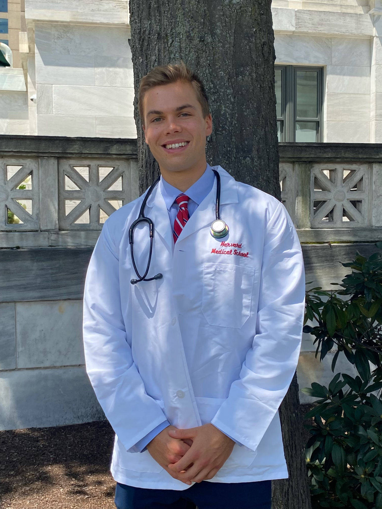

About

I'm Cameron Young, an MD candidate at Harvard Medical School working where medicine meets AI. I build and evaluate large language model tools for clinical decision-making, and I advise organizations on putting AI to work in healthcare responsibly.
Before medical school I was a Churchill Scholar at the University of Cambridge, earning an MPhil in Medical Sciences in the Caldas Lab. I hold dual degrees in chemical engineering and biochemistry from Northeastern University, and my research spans AI, cancer genomics, pediatric COVID-19, and biomedical engineering, with 45+ publications in journals including NEJM, JAMA, and Nature family journals.
Outside of work I run (including the 2024 Boston Marathon), do CrossFit, travel, and go to as many concerts as I can.
Work
AI Consulting
I advise healthcare and life-science teams on AI strategy and implementation, from scoping use cases to evaluating LLM tools for accuracy, safety, and bias.
Clinical AI · Mass General Brigham
I lead development of LLM-based tools for medical decision-making at MGB Innovation, including work showing racial, ethnic, and sex bias in LLM opioid recommendations (PAIN, 2024) and a custom LLM for rare pediatric disease diagnosis (Am J Med Genet, 2025).
Cancer Genomics · University of Cambridge
At the Cancer Research UK Cambridge Institute I built CopyClust, an open-source machine learning classifier for breast cancer integrative clusters (Sci Rep, 2024).
Pediatric COVID-19 · Boston Children's / CDC
I coordinated a CDC-funded surveillance registry of severe pediatric COVID-19 and MIS-C across 70+ hospitals, with findings in NEJM and JAMA that informed CDC and WHO guidance.
Biomedical Engineering · MIT / Brigham
I helped develop personalized radiation-attenuating devices that advanced to a phase I trial (Adv Sci, 2021) and used machine learning to uncover drug–transporter interactions (Nat Biomed Eng, 2024).
Selected Publications
Full list on Google Scholar.
First Author
- Young CC, et al. Diagnostic accuracy of a custom large language model on rare pediatric disease case reports. Am J Med Genet A. 2025. doi
- Young CC, et al. Racial, ethnic, and sex bias in large language model opioid recommendations for pain management. PAIN. 2024. doi
- Young CC, et al. Development and validation of a DNA copy-number-based machine learning algorithm (CopyClust) for breast cancer integrative cluster classification. Sci Rep. 2024. doi
- Young CC, et al. Clinical course associated with aseptic meningitis induced by IVIG for the treatment of MIS-C. J Pediatr. 2023. doi
- Young CC, et al. Respirators in healthcare: material, design, regulatory, environmental, and economic considerations for clinical efficacy. Glob Chall. 2022. doi
- Mehta S*, Young CC*, et al. Resveratrol and curcumin attenuate ex vivo sugar-induced cartilage glycation, stiffening, senescence, and degeneration. Cartilage. 2021. doi *co-first
- Young CC, et al. Bioelectricity for drug delivery: the promise of cationic therapeutics. Bioelectricity. 2020. doi
Selected Collaborations
- Son MBF, et al., Young CC, et al. Multisystem inflammatory syndrome in children – initial therapy and outcomes. N Engl J Med. 2021. doi
- Feldstein LR, et al., Young CC, et al. Characteristics and outcomes of US children and adolescents with MIS-C compared with severe acute COVID-19. JAMA. 2021. doi
- LaRovere KL, et al., Young CC, et al. Neurologic involvement in children and adolescents hospitalized in the US for COVID-19 or MIS-C. JAMA Neurol. 2021. doi
- Byrne JD, Young CC, et al. Personalized radiation attenuating materials for gastrointestinal mucosal protection. Adv Sci. 2021. doi
- Shi Y, et al., Young CC, et al. Screening oral drugs for their interactions with the intestinal transportome via porcine tissue explants and machine learning. Nat Biomed Eng. 2024. doi
- Zambrano LD, et al., Young CC, et al. BNT162b2 mRNA vaccination against COVID-19 is associated with decreased likelihood of MIS-C. Clin Infect Dis. 2023. doi
Awards & Honors
- 2022
Churchill ScholarshipFirst recipient in Northeastern University history
- 2022
CDC/ATSDR Charles C. Shepard Science AwardPediatric COVID-19 surveillance research
- 2021
Goldwater ScholarshipBarry Goldwater Excellence in Education Foundation
- 2026
Norfolk District Medical Society Medical Student Scholarship
- 2024
Point Foundation Professional Development Scholarship
- 2022
Honors Program Senior AwardExcellence in Research and Creative Endeavors, Northeastern
- 2020
Outstanding Leadership AwardDept. of Chemical Engineering, Northeastern
- 2019
Best Poster, Engineering & Applied SciencesNational Collegiate Research Conference, Harvard
- 2019
Outstanding SophomoreDept. of Chemical Engineering, Northeastern
- 2017–19
Northeastern Honors Scholarship & Research AwardsFull-tuition merit scholarship; UGRCE and Early Research awards